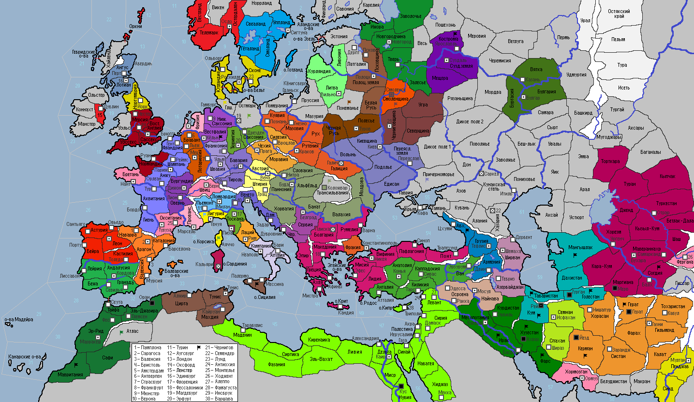

<== | 1 | | 2 | | 3 | | 4 | | 5 | | 6 | | 7 | | 8 | | 9 | | 10 |
Армиллярная сфера
Армиллярная сфера - астрономический инструмент, использовавшийся для определения экваториальных или эклиптических координат небесных светил. Её изобретение приписывают древнегреческому геометру Эратосфену. В средние века армиллярная сфера становится основным навигационным устройством. [+1 к дальности торговли у стран, имеющих Учёного; +0,5 к дох от ТОР; +0,5 н/о у стран, имеющих флот]
· Шейх Кордовы Ибрахим I вводит закят для стран, исповедующих суннизм. · Юдифь стала первой женщиной во главе Венгрии в её истории. · Никейская империя принимает условия мира, выдвинутые герцогом Апулии и оставляет юг Италии. Басилевс Фотий заключает военный союз с Румским султанатом. · Рабы поднимают восстание в г.Кус! Фатимиды заключают с Румом военный союз. Разгромлены рабы в г.Тарабулис и Ливии. · Богемия принимает покровительство Польского королевства [Богемия не может претендовать на пост императора СРИ]. · Массовые восстания содрогают сельджукскую державу: восстали г.Рей, Кум, Керман, Голестан. В Согдии мятежники разбивают караханидский отряд и выдворяют его вон. Под напором внутренних и внешних проблем сельджукский султан Бюлент Грозные очи признает своё разгромное поражение в войне против соседей и сдает победителям по условиям предъявленного ультиматума большую половину страны. Султан признает себя вассалом Газневидского султаната. · Козьма Меняйло, став новым избранным посадником Новгородской республики, узурпирует власть, меняя форму правления на наследную монархию. · Абреки нападают на Абхазию и захватывают её. · Убба I Добрый принимает Данию после смерти отца… Датчане атакуют варваров в Гольштейне и одерживают верх над неприятелем. · Набжиб I, на радостях получения титула султана, переусердствовал в гареме и умер от сердечного приступа в 35-ти летнем возрасте… Газневиды захватывают мятежный г.Нишапур. · Войска Швабии вступают в Остмарк и терпят поражение в сражении с местными племенами. · Император СРИ Сиджифредо I изгоняет из Флоренции евреев и рекомендует другим странам Империи последовать его примеру. Зная о том, что евреи получают полную поддержку от правителя Генуи, император СРИ заключает военный союз с Ломбардией и обе страны объявляют соседу войну. Флорентийцы атакуют о.Корсика и разбивают местный гарнизон генуэзцев. · Против правления Буидов восстают Ирак и Хузестан! Попытка удара по мятежникам в Ираке закончилась крахом буидской армии. · Соседние племена меря нападают на провинцию Кострома. Мятеж противников князя Симеона подавлен в г.Суздале. · Армия Саксонии наносит в 1045 году поражение племенам вендов в Остмарке и захватывает их территории. · Андреа Герардеска получил вотум доверия избирателей Пизанской республики на новый срок. · Эпидемия дизентерии охватила г.Рим и окрестности Вечного города. Папа Иоанн V перенес хворь, показав подчиненным пример достойного сопротивления болезни. · Отлученные правители Франции и Арагона заключают оборонительный союз, вошедший в историю под названием «союз нечестивцев». · Орсо Коррара избран народом Венеции своим новым правителем. · Улуг-хан возглавил Караханидское государство. · Боэмунд Кроткий – новый герцог Лотарингии. · Эмир Ширвана Мани отказывается признавать Фатимидский султанат своим сюзереном и объявляет войну Буидам! · «Долой ненавистных Конрадинов!» - под этими лозунгами в Вестфалии начинается гражданская война, знать собирает мятежные силы в столичной провинции. · Рабы восстали на о.Сицилия! · Ломбардские войска вошли в провинцию Лигури · Мустафа II стал во главе гос-ва Альморавидов. В Мавритании и г.Оран восстают рабы! Альморавидский флот терпит неудачу в сражении с морскими разбойниками-данами. · Энрике Орсо избирается новым дожем Генуи в разгар Итальянской войны. · Основан новый город: Дрезден (Саксония)